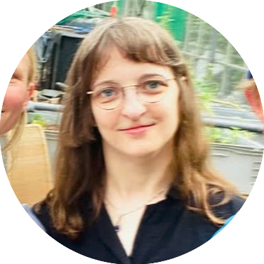

High-Performance Computing, Machine Learning & Materials Informatics
Hello, I'm Dr. Christina Ertural, a Senior Software Architect, Computational Scientist and Full Stack Quantum Chemist bridging deep mathematical and physical sciences with production-grade software development. I am a former PostDoc Researcher in materials informatics in the Digital Materials Chemistry group at BAM and a core developer of the globally utilized LOBSTER quantum chemistry software.
My expertise lies in designing scalable Python-based workflows, high-throughput data pipelines (ETL), and advanced automation tools powered by MongoDB and SQL. I specialize in High-Performance Computing (HPC) and training Artificial Intelligence / Machine Learning architectures to solve complex industry and ecosystem challenges.
So far, my work focused on developing innovative Python-based workflows powered by MongoDB to automate machine-learned interatomic potential generation, collaborating with the Deringer group from Oxford to discover new low thermal conductivity thermoelectric materials. Furthermore, I specialize in employing automation tools for scientific workflows, combining machine learning with chemical bonding analysis in materials informatics.
Beyond academic software engineering, I am a tech entrepreneur. As a Co-Founder & the Lead AI Architect at EnkiPonics, I design real-time data pipelines and computer vision models (LSTM, Bayes Networks,YOLO, CNNs) for closed-loop agricultural systems, driving everything from system architecture to B2B customer discovery.
I also have several smaller projects using C++, Python and JS/TS for several different applications. Check out my GitHub profile to explore my work, or visit the Parse-Patrol demo video on my YouTube channel to have a glimpse into MCP servers and AI agents.
Automated Python-based workflow for machine-learned interatomic potential generation. Using the Materials project frameworks like atomate2 and jobflow as well as the MongoDB database program.
Learn MoreA C++ application for chemical bonding analysis from plane waves. Build on boost and Eigen frameworks.
Learn MorePython-based tool for parsing large quantum chemistry software files with MCP servers and AI agents. You can find a demo video on my YouTube channel.
Learn MorePython-based Discord chatbot. Text-based AI chatbot for various tasks to entertain the users.
Learn MoreAs a Co-Founder of EnkiPonics, I am co-developing LoopingPilot, a digital solution for operating aquaponics systems. LoopingPilot Core builds on a Python AI infrastructure like e.g. LSTMs, Bayes Networks, CNNs and YOLO. We are currently in the pre-founding stage.
Learn MoreEnkiPonics (Pre-Founding Deep-Tech Project) • 2025 - Present
Architecting and implementing custom machine learning core models in Python to stabilize biological cycles using multi-sensor IoT data streams.
Developing high-performance time-series algorithms and computer vision pipelines (LSTMs, Bayesian Networks, CNNs, YOLO) to predict ecosystem imbalances.
Leading B2B customer discovery interviews to translate market needs into concrete technical software specifications.
Bundesanstalt für Materialforschung und -prüfung (BAM) • 2022 - 2025
Architected and deployed automated, high-throughput Python workflow frameworks (AutoPLEX) for large-scale data analysis and ML potential generation.
Managed complex MongoDB infrastructures and scaled open-source codebases to over 20,000+ active downloads.
Collaborated internationally with the Deringer Group (University of Oxford) to discover new low thermal conductivity thermoelectric materials.
Mentored and supervised PhD, Bachelor's, Master's, and undergraduate lab students in computational chemistry and software development.
University of Oxford • April/May 2023
Collaborated with the Deringer group on advanced materials informatics, leading to the co-conceptualization of the AutoPLEX ecosystem. Delivered specialized technical workshops and lectures.
RWTH Aachen University • 2017 - 2022
Led large-scale computational research projects. Supervised core C++ development for the LOBSTER simulation software. Mentored and supervised Bachelor's, Master's, and undergraduate lab students.
RSC • 2023-2028
Recognition of the scientific impact.
RWTH Aachen University • 2017-2022
Specialization in Software Development and Chemical Bonding Analysis,
Dissertation Über die elektronische Struktur funktioneller Festkörpermaterialien und ihre Beschreibung mittels lokaler Bindungsindikatoren
(On the electronic structure of solid-state functional materials and their characterization using local bonding indicators)
Supervised by Prof. Dr. Richard Dronskowski
RWTH Aachen University • 2015-2017
Specialization in theoretical and catalytic chemistry

Field research for EnkiPonics at an aquaponic facility.